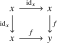
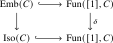
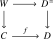
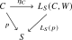
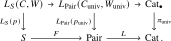
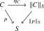
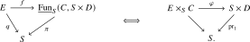
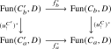
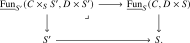
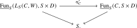

We now construct geometric realization as the left adjoint to \(\An \hookrightarrow \Cat\) and then pass to localization at a chosen collection of morphisms. We subsequently perform these constructions fiberwise and identify the resulting relative construction with an absolute localization.
8.8.1 Geometric realizations and localizations
The groupoid-core functor constructed in Proposition 8.6.11 is right adjoint to the inclusion \(\An\hookrightarrow\Cat\). We now construct its left adjoint \[ \geom{-}\colon \Cat \to \An \] which sends a small category to its geometric realization. We then extend the same construction to localization at a chosen subcategory.
Proposition 8.8.1. The inclusion functor \(i\colon \An \hookrightarrow \Cat\) admits a left adjoint \(\geom{-}\colon \Cat \to \An\).
Proof
We will verify the conditions of Proposition 6.2.3. Let \(c\) be an object of \(\Cat\) and let \(C\) denote its associated small category. By condition (Cat7) there exists a small category \(\geom{C}\) together with a functor \(\eta_C\colon C \to \geom{C}\) that exhibits it as a localization of \(C\) at all its morphisms. Thus \(\geom{C}\) is the geometric realization of \(C\) and is an anima by Proposition 3.4.5. By recognition, it is classified by some object \(\geom{C} \in \An\), and under directed univalence the localization map \(C \to \geom{C}\) is classified by a morphism \(c \to \geom{C}\) in \(\Cat\).
We claim the assignment \(c \mapsto \geom{C}\) enhances to a functor \(\geom{-}\colon \Cat \to \An\) which is left adjoint to the inclusion functor. By Proposition 6.2.3, it will suffice to show that for any object \(x \in \An\) the map \[ \Hom_{\An}(\geom{C},x) \iso \Hom_{\Cat}(i\geom{C},ix) \xrightarrow{- \circ \eta_C} \Hom_{\Cat}(c,ix) \] is an equivalence. Under directed univalence, this map agrees with the map \[ - \circ \eta_C \colon \Map(\geom{C},X) \to \Map(C,X). \] The fact that this map is an equivalence then follows from Lemma 3.4.3.
The geometric realization functor is a special case of the process of localizing by a family of maps.
Construction 8.8.2. Let \(C\) be a category with pullbacks.
There is a functor
\[
\delta\colon\Fun([1],C)\to\Fun([1],C)
\]
sending each morphism \(f\colon x\to y\) in \(C\) to the diagonal map \(\delta_f\colon x\to x\times_y x\), induced by the canonical commutative square
 
Proposition 8.8.3. The functor \(C\mapsto(C,C^\simeq)\) has a left adjoint \[ L\colon\Pair\to\Cat\, . \] More precisely, for a pair \((C,W)\), the category \(L(C,W)\) corresponds to the localization of \(C\) by the family of maps \(\Map([1],W)\).
Proof
A morphism of pairs of the form \((C,W)\to (D,D^\simeq)\) corresponds to a
commutative square in \(\Cat\) of the form

Remark 8.8.4. For any category, \(i(\geom{C})=L(C,C)\), where \(i\colon\An\to\Cat\) denotes the canonical embedding.
8.8.2 Fiberwise localizations
As a consequence of the adjunction between \((-)^\flat\) and \(L\) from the preceding proposition, we get for every category \(S\) an adjunction between the induced functors \[ L_S\colon \Fun(S,\Pair) \to \Fun(S,\Cat) \qquadtext{ and } (-)^\flat_S\colon \Fun(S,\Cat) \to \Fun(S,\Pair). \] The existence of the functor \(L_S\) allows us to form fiberwise localizations of (small) cocartesian fibrations:
Proposition 8.8.5. Let \(p\colon C \to S\) be a small cocartesian fibration.
We consider, for each object \(x : S^\simeq\) a subcategory \(W_x\hookrightarrow C_x\)
and assume that, for each morphism \(f\colon x\to y\) in \(S\), the induced
functor \(f_!\colon C_{x}\to C_{y}\) restricts to a functor from \(W_x\) to \(W_y\).
Then there exists a commutative triangle

(1) The functor \(L_S(p)\) is a cocartesian fibration;
(2) For any other small cocartesian fibration \(D \to S\), precomposition with \(\eta_C\) induces an equivalence \[ \eta_C^*\colon \Map_S^{\CoCart}(L_S(C,W), D) \iso \Map_S^{\CoCart,W}(C,D) \] where \(\Map_S^{\CoCart,W}(C,D)\) is the collection of cocartesian functors \(\varphi\colon C\to D\) over \(S\) with the property that, for any object \(x : S^\simeq\), the induced functor on fibers \(\varphi_x\colon C_x\to D_x\) sends all morphisms in \(W_x\) to isomorphisms in \(D_x\).
(3) The formation of \(\eta_C\) and \(L_S(C,W)\) is stable under base change along any functor \(S' \to S\). In particular, for any object \(s : S^\simeq\), the functor \((\eta_C)_s\colon C_s \to L_S(C,W)_s\) induces an equivalence \[ L(C_s,W_s) \iso L_S(C,W)_s\, . \]
Proof
Using cocartesian transport, each morphism \(u\) of \(C\) factors uniquely into a \(p\)-cocartesian morphism \(v\colon x\to y\) followed by a morphism \(w\colon y\to y'\) in the fiber over \(p(y)\). We define \(W\) to have the objects \(x\) that belong to \(W_{p(x)}\) and the morphisms \(u\) between such objects for which the vertical factor \(w\) belongs to \(W_{p(y)}\). The assumption that cocartesian transport restricts to the \(W_x\) implies that \(W\) is closed under composition, that \(W\to S\) is a cocartesian fibration, and that \(W\hookrightarrow C\) is a cocartesian functor over \(S\). The fibers \(W_x\) are small by subcategory closure, so \(W\to S\) is small by (Cat9). Thus directed univalence gives a functor \(F\colon S \to \Pair\).
Then the composite
\[
L\circ F\colon S \to \Cat
\]
classifies a cocartesian fibration \(L_S(p)\colon L_S(C,W) \to S\):
 The natural transformation \(\id_{\Pair} \to (L(-))^\flat\)
provides a natural transformation \(F \to (L(F))^\flat\), which, by directed univalence, yields
a cocartesian functor from \(C\) to \(L_S(C,W)\) over \(S\):
This produces the desired commutative triangle and proves property (1). For (2), we note that postcomposition with the functors \(L\) and \((-)^\flat\) extends to an adjunction
\[
L_S=(L)_*\colon \Fun(S,\Pair) \rightleftarrows \Fun(S,\Cat) \noloc ((-)^\flat)_*
\]
whose unit is induced by the unit map of the adjoint pair \((L,(-)^\flat)\), by
Proposition 4.4.4.
In particular, for functors \(F\colon S \to \Pair\) and \(G\colon S \to \Cat\) the map
\[
\Hom_{\Fun(S,\Cat)}(L\circ F, G) \xrightarrow{(-)^\flat\circ -}
\Hom_{\Fun(S,\Pair)}((L\circ F)^\flat, G^\flat) \xrightarrow{- \circ \eta} \Hom_{\Fun(S,\Pair)}(F,G^\flat)
\]
is an equivalence. The functor \(F\colon S \to \Pair\) corresponds to a small cocartesian fibration \(C \to S\),
equipped with a subcategory \(W\hookrightarrow C\) such that the restriction of \(p\) to \(W\)
remains a cocartesian fibration and the embedding of \(W\) into \(C\) a cocartesian functor over \(S\),
while the functor \(G\colon S \to \Cat\) corresponds to a small cocartesian fibration \(D \to S\). Under directed univalence, the previous functor then translates into the functor
\[
\eta_C^*\colon \Map_S^{\CoCart}(L_S(C,W), D) \iso \Map_S^{\CoCart,W}(C, D),
\]
from part (2), showing that it is an equivalence.
The natural transformation \(\id_{\Pair} \to (L(-))^\flat\)
provides a natural transformation \(F \to (L(F))^\flat\), which, by directed univalence, yields
a cocartesian functor from \(C\) to \(L_S(C,W)\) over \(S\):
This produces the desired commutative triangle and proves property (1). For (2), we note that postcomposition with the functors \(L\) and \((-)^\flat\) extends to an adjunction
\[
L_S=(L)_*\colon \Fun(S,\Pair) \rightleftarrows \Fun(S,\Cat) \noloc ((-)^\flat)_*
\]
whose unit is induced by the unit map of the adjoint pair \((L,(-)^\flat)\), by
Proposition 4.4.4.
In particular, for functors \(F\colon S \to \Pair\) and \(G\colon S \to \Cat\) the map
\[
\Hom_{\Fun(S,\Cat)}(L\circ F, G) \xrightarrow{(-)^\flat\circ -}
\Hom_{\Fun(S,\Pair)}((L\circ F)^\flat, G^\flat) \xrightarrow{- \circ \eta} \Hom_{\Fun(S,\Pair)}(F,G^\flat)
\]
is an equivalence. The functor \(F\colon S \to \Pair\) corresponds to a small cocartesian fibration \(C \to S\),
equipped with a subcategory \(W\hookrightarrow C\) such that the restriction of \(p\) to \(W\)
remains a cocartesian fibration and the embedding of \(W\) into \(C\) a cocartesian functor over \(S\),
while the functor \(G\colon S \to \Cat\) corresponds to a small cocartesian fibration \(D \to S\). Under directed univalence, the previous functor then translates into the functor
\[
\eta_C^*\colon \Map_S^{\CoCart}(L_S(C,W), D) \iso \Map_S^{\CoCart,W}(C, D),
\]
from part (2), showing that it is an equivalence.
For part (3), we observe that the map \(\eta_C\) can in fact be recovered as a pullback from the universal case \(S = \Pair\) and \(F = \id_{\Pair}\). More precisely, the embedding
\[
\Pair\hookrightarrow\Fun([1],\Cat)\iso
\ul{\CoCart}_{\Cat \times \Cat}(\Cat_{\bullet} \times \Cat, \Cat \times \Cat_{\bullet})
\]
yields a commutative triangle of the form
 in which \(p_\univ\) as well as its restriction to \(W_\univ\) are cocartesian fibrations and
\(i_\univ\) is a cocartesian functor over \(\Pair\) and an embedding (fiberwise, hence globally as well).
Pulling back the diagram above along \(F\colon S\to \Pair\)
recovers \(W\hookrightarrow C\) over \(S\) and we have canonical pullback squares of
the form:
in which \(p_\univ\) as well as its restriction to \(W_\univ\) are cocartesian fibrations and
\(i_\univ\) is a cocartesian functor over \(\Pair\) and an embedding (fiberwise, hence globally as well).
Pulling back the diagram above along \(F\colon S\to \Pair\)
recovers \(W\hookrightarrow C\) over \(S\) and we have canonical pullback squares of
the form:
Corollary 8.8.6. Let \(p\colon C \to S\) be a small cocartesian fibration. Then there exists a commutative triangle

(1) The functor \(\geom{p}_S\) is a small left fibration;
(2) For any other small left fibration \(X \to S\), precomposition with \(\eta_C\) induces an equivalence \[ \eta_C^*\colon \Map_S^{\CoCart}(\geom{C}_S, X) \iso \Map_S^{\CoCart}(C, X). \]
(3) The formation of \(\eta_C\) and \(\geom{C}_S\) is stable under base change along any functor \(S' \to S\). In particular, for any object \(s\) of \(S\) the functor \((\eta_C)_s\colon C_s \to (\geom{C}_S)_s\) induces an equivalence \[ \geom{C_s} \iso (\geom{C}_S)_s. \]
Proof
Under the assumptions of the preceding proposition, if we suppose furthermore that \(W_x=C_x\) for all \(x : S^\simeq\), we define \[ \geom{C}_S=L_S(C,C)\, . \] We see that each fiber of \(L_S(p)\) at \(x : S^\simeq\) is the geometric realization of the fiber of \(p\): \[ \geom{C_x}=L_S(C,C)_x\, . \] Thus the fibers of the cocartesian fibration \(L_S(p)\) are animae, so \(L_S(p)\) is a left fibration by Lemma 6.1.8. This corollary is an immediate consequence of Proposition 8.8.5.
8.8.3 Fiberwise localization as a localization
In the previous subsection we constructed the relative localization \(\eta_C\colon C\to L_S(C,W)\) and established its fiberwise universal property. We now prove that it is the absolute localization at those morphisms of \(W\) whose images in \(S\) are isomorphisms. The special case \(W=C\) recovers fiberwise geometric realization.
The main ingredient for the proof will be a certain result about relative functor categories. Let \(p\colon C \to S\) be a cocartesian fibration. For any other category \(D\), we may consider the projection map \(S \times D \to S\), which defines another category over \(S\). Since \(p\) is exponentiable by Axiom M, we may form the relative functor category over \(S\):
\[
\pi\colon \ulFun_S(C,S \times D) \to S.
\]
Given another functor \(q\colon E \to S\), a map \(f\colon E \to \ulFun_S(C,S \times D)\) over \(S\) corresponds to a map \(\varphi\colon E \times_S C \to S \times D\) over \(S\):

Proposition 8.8.7. Let \(p\colon C \to S\) be a cocartesian fibration and let \(D\) be a category. Then the functor \[ \pi\colon T := \ulFun_S(C, D \times S) \to S \] is a cartesian fibration whose fiber over an object \(s\) of \(S\) is given by \(\Fun(C_s, D)\).
For any cocartesian functor \(C \to C'\) over \(S\), the induced functor \(\ulFun_S(C',D \times S) \to \ulFun_S(C,D \times S)\) is cartesian over \(S\). Dually, a cartesian fibration \(C\to S\) gives a cocartesian relative functor category, and precomposition along a cartesian functor is cocartesian over \(S\).
Proof
We prove the cocartesian case. The cartesian case is dual, by exchanging the roles of \(0\) and \(1\) in the interval \([1]\).
Recall that for a map \(\alpha\colon S' \to S\), we have a pullback square
 where we write \(C' := S' \times_S C \to S'\). In particular, it follows directly that the fibers of \(\pi\) are given by \(\Fun(C_s,D)\), and it remains to show that \(\pi\) is a cartesian fibration.
where we write \(C' := S' \times_S C \to S'\). In particular, it follows directly that the fibers of \(\pi\) are given by \(\Fun(C_s,D)\), and it remains to show that \(\pi\) is a cartesian fibration.
We will first show that \(\pi\) is a locally cartesian fibration and then show that locally cartesian morphisms compose. By the dual of Proposition 6.5.4, this will imply the claim.
Consider the following commutative diagram:
 Given a morphism \(u\colon a \to b\) in \(S\), we may consider the fiber of the map \(\vec{\ev}^{\pi}_1\) over \(u \in \Fun([1],S)\) to obtain a functor
\[
l := (\vec{\ev}_1^{\pi})_u \colon \Fun([1],T)_u \to (S \vectimes{\pi} T)_u \simeq T_b.
\]
We claim that \(\pi\) is a locally cartesian fibration if and only if this functor \(l\) admits a right adjoint section \(r\colon T_b \hookrightarrow \Fun([1],T)_u\). Indeed, the existence of \(r\) means that for every object \(t \in T_b\) there exists a morphism \(r(t) \colon t' \to t\) over \(u\) such that for every diagram
Given a morphism \(u\colon a \to b\) in \(S\), we may consider the fiber of the map \(\vec{\ev}^{\pi}_1\) over \(u \in \Fun([1],S)\) to obtain a functor
\[
l := (\vec{\ev}_1^{\pi})_u \colon \Fun([1],T)_u \to (S \vectimes{\pi} T)_u \simeq T_b.
\]
We claim that \(\pi\) is a locally cartesian fibration if and only if this functor \(l\) admits a right adjoint section \(r\colon T_b \hookrightarrow \Fun([1],T)_u\). Indeed, the existence of \(r\) means that for every object \(t \in T_b\) there exists a morphism \(r(t) \colon t' \to t\) over \(u\) such that for every diagram
 in \(T\) living over \(u\colon a \to b\), there exists a unique dashed arrow filling the square. This is equivalent to \(r(t)\colon t' \to t\) being a locally cartesian lift of \(u\).
in \(T\) living over \(u\colon a \to b\), there exists a unique dashed arrow filling the square. This is equivalent to \(r(t)\colon t' \to t\) being a locally cartesian lift of \(u\).
This characterization of locally cartesian fibrations works for arbitrary functors \(T \to S\). For our specific \(T\) we must now compute the map \(\Fun([1],T)_u \to T_b\). Its source is \(\Fun(C_u,D)\), where \(C_u\) is defined via the following pullback diagram:
 We also have \(T_b \iso \Fun(C_b, D)\). The map \(\Fun(C_u,D) \to \Fun(C_b, D)\) is given by restriction along the inclusion \(C_b \hookrightarrow C_u\). Our goal now is to find a right adjoint section of this functor.
We also have \(T_b \iso \Fun(C_b, D)\). The map \(\Fun(C_u,D) \to \Fun(C_b, D)\) is given by restriction along the inclusion \(C_b \hookrightarrow C_u\). Our goal now is to find a right adjoint section of this functor.
Recall from Proposition 4.4.4 that if
\(\ell \dashv s\colon A \rightleftarrows B\) and \(s\) is a right adjoint section, then precomposition gives a right adjoint section
\[
s^*\colon \Fun(A,D) \rightleftarrows \Fun(B,D) \noloc \ell^*.
\]
Here \(\ell^*\) is the right adjoint section. Thus it suffices to show that the inclusion \(C_b \hookrightarrow C_u\) is a right adjoint section. This is a general fact about cocartesian fibrations: we have a pullback square
 Since \(p_u\) is a cocartesian fibration and \(\{1\} \hookrightarrow [1]\) admits a left adjoint \([1] \to \{1\}\), Proposition 6.2.4 shows that \(C_b \hookrightarrow C_u\) also admits a left adjoint. Hence the inclusion is a right adjoint section, as desired. This finishes the proof that \(\pi\colon T \to S\) is a locally cartesian fibration.
Since \(p_u\) is a cocartesian fibration and \(\{1\} \hookrightarrow [1]\) admits a left adjoint \([1] \to \{1\}\), Proposition 6.2.4 shows that \(C_b \hookrightarrow C_u\) also admits a left adjoint. Hence the inclusion is a right adjoint section, as desired. This finishes the proof that \(\pi\colon T \to S\) is a locally cartesian fibration.
To see that locally \(\pi\)-cartesian morphisms are closed under composition, we may equivalently show that the locally cartesian transport functors compose. In other words, given two morphisms \(u\colon a \to b\) and \(v\colon b \to c\) in \(S\), we need to show that the composite \[ T_c = \Fun(C_c,D) \xrightarrow{v^*} \Fun(C_b,D) \xrightarrow{u^*} \Fun(C_a,D) = T_a \] agrees with \((vu)^*\colon T_c \to T_a\). To see this, we give an explicit description of \(v^*\) and \(u^*\).
We start by giving an explicit description of the left adjoint \(t\colon C_u \to C_b\) to the inclusion functor \(C_b \to C_u\): on objects, it sends a pair \((t,x)\) consisting of an object \(t\) of \([1]\) and an object \(x\) of \(C_{u(t)}\) to the object \(u(t \to 1)_!(x)\), given by the cocartesian transport of \(x\) along the morphism \(u(t \to 1)\), where \(t \to 1\) is the unique map in \([1]\) from \(t\) to \(1\). The locally cartesian transport \(u^*\colon T_b \to T_a\) along \(u\colon a \to b\) is then given as the following composite: \[ u^*\colon \Fun(C_b, D) \xrightarrow{t^*} \Fun(C_u,D) \xrightarrow{\mathrm{res}} \Fun(C_a,D). \] The first functor sends \(F \colon C_b \to D\) to the assignment \[ (t,x) \mapsto F(u(t \to 1)_!(x)). \] Restricting to \(t = 0\) thus shows that the composite sends \(F\) to the functor \(x \mapsto F(u_!(x))\), which is the precomposition of \(F\) with \(u_!\colon C_a \to C_b\).
Now, given two morphisms \(u\colon a \to b\) and \(v\colon b \to c\) in \(S\), the composite \[ \Fun(C_c,D) \xrightarrow{v^*} \Fun(C_b,D) \xrightarrow{u^*} \Fun(C_a,D) \] is given by precomposition with \(v_! \circ u_!\). Since \(p\) is a cocartesian fibration, this functor is identified with \((v \circ u)_!\colon C_a \to C_c\), so precomposition with it agrees with \((vu)^*\).
It remains to prove the assertion concerning functoriality. Let \(f\colon C \to C'\) be a cocartesian functor over \(S\). For a morphism \(u\colon a \to b\) in \(S\), the preceding computation identifies cartesian transport in the two relative functor categories with precomposition by \(u_!^C\colon C_a \to C_b\) and \(u_!^{C'}\colon C'_a \to C'_b\), respectively. Since \(f\) is cocartesian, there is an identification
\[
f_b \circ u_!^C = u_!^{C'} \circ f_a.
\]
Consequently, the square

Remark 8.8.8. More generally, if \(p\colon C \to S\) is merely locally cocartesian, \(\pi\colon T \to S\) will be locally cartesian. Indeed, for a functor \(S' \to S\) we have a pullback square

Theorem 8.8.9. Let \(p\colon C \to S\) be a small cocartesian fibration. We assume given a subcategory \(i\colon W\hookrightarrow C\) such that \(p\circ i\) is a cocartesian fibration and \(i\) is a cocartesian functor over \(S\). Then the functor \(\eta_C\colon C \to L_S(C,W)\) exhibits \(L_S(C,W)\) as the localization of \(C\) by the morphisms in \(W\) which are sent to isomorphisms in \(S\).
Proof
By Proposition 8.4.6, the cocartesian fibration \(W\to S\) is small, so the fiberwise localization of Proposition 8.8.5 is defined.
We must show that precomposition with \(\eta_C\) induces for every category \(D\) a fully faithful functor
\[
\eta_C^*\colon \Fun(L_S(C,W),D) \hookrightarrow \Fun(C,D)
\]
whose image consists of the functors which invert the morphisms in \(W\) sent to isomorphisms in \(S\). To this end, consider the following functor over \(S\):

The constructions of this chapter have now produced the two universal classifiers needed later in the book. The universe \(\Cat\) classifies small cocartesian fibrations and the universe \(\An\) classifies small left fibrations. Directed univalence upgrades these classifications to the straightening/unstraightening equivalences, while geometric realization and fiberwise localization illustrate how categorical constructions can be performed uniformly on the classified families.